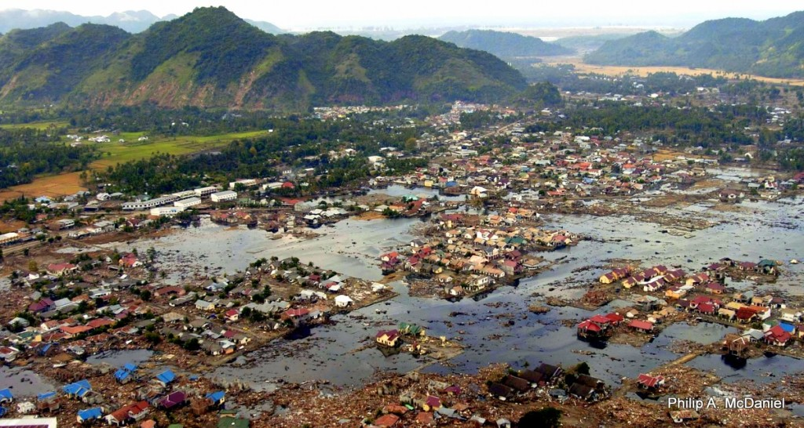

¿Por que hay Calentamiento Global?

Ahora, el clima de la tierra ha cambiado a través de toda la historia del mundo. Sólo en los últimos 650,000 años han habido 7 ciclos de avance y retroceso glacial que terminó con el abrupto final de la última glaciación hace 7,000 años, que marcó también el inicio de la era climática moderna y de la civilización humana. La mayor parte de estos cambios climáticos se le atribuyen a variaciones muy pequeñas de la órbita terrestre y que a su vez cambiaron la cantidad de energía solar que recibía la Tierra.
Las tendencias actuales de calentamiento son bastante significativas porque, lo más seguro, es que son inducidos por el ser humano y sus actividades y, más preocupante, está sucediendo a un ritmo que no tiene precedentes en los últimos 1,300 años.

Satélites en órbita y avances tecnológicos de simulación, de modelos y otros avances han permitido a los científicos ver mejor el problema y obtener una idea más amplia de la situación y el proceso, utilizando ya datos de tipo global, para obtener una visión global del cambio climático.
Hay ciertas evidencias y hechos que no pueden negarse ni disputarse en torno al calentamiento global del planeta:
El dióxido de carbono y otros gases atrapan el calor, hecho demostrado en el siglo XIX. Sus capacidades para influuir sobre la transferencia de la energía infraroja en la atmósfera es la base científica misma de muchos instrumentos diseñados por la Jet Propulsion Laboratory (JPL), tales como el AIRS. Un aumento en los niveles atmosféricos de CO2 debe resultar en un aumento de la temperatura de la Tierra. Núcleos de hielo extraídos en perforaciones de hielos permanentes de Groenlandiam la Antártida y glaciares de montañas tropicales, muestran que el clima reponde a los cambios de energía emitida por el Sol, las variaciones de la órbita terrestre y los niveles de gases invernadero en la atmósfera terrestre. Otro aspecto de estas evidencias es que muestran que cambios fuertes en el clima han sucedido en un periodo corto (desde el punto de vista geológico) en cosa de decenas de años, no millones ni miles de años.
a evidencia de que estamos viviendo un cambio climático rápido incluye:
1. Aumento del nivel del mar.
El nivel mundial del mar ha aumentado 17 centímetros en el siglo XX. El aumento del nivel del mar en la última década es casi el doble del del siglo pasado.
2. Aumento de la temperatura global
Las tres reconstrucciones más importantes de la temperatura global terrestre muestran que la Tierra se ha calentado desde 1880. La mayor parte de este calentamiento ha sucedido desde 1970, con los 20 años más calurosos desde 1981 y los diez más calientes en los 12 últimos años. Aunque los años del 2000 han sido afectados por un declive en la emisión de calor solar, con su mínimo entre 2007 y 2009, las temperaturas de la Tierra continúan su aumento.
3. Los océanos se calientan
Han absorbido la mayor parte del aumento de calor, los 700 metros superiores de los océanos muestran un aumento de 0.302 grados Fahrenheit desde 1969.
4. Las placas de hielo disminuyen
Las placas de Groenlandia y la Antártida ha disminuido en masa.
5. Hielos del Ártico disminuyen
La extensión y grosor del hielo ártico ha disminuido rápidamente en las últimas décadas.
6. Retroceso de glaciares
Los glaciares en todo el mundo están retrocediendo, incluyendo los Alpes, Himalayas, Andes, Alaska, Africa y otros lugares.
7. Eventos meteorológicos extremos
La cantidad de eventos de temperaturas extremas de calor en los EE.UU. han aumentado, mientras que los eventos de extremo frío han disminuido desde 1950.
8. Acidificación de los Océanos
Desde el inicio de la Revolución Industrial la acidez de las aguas superficiales de los océanos ha aumentado en un 30%. Es el resultado de la absorción del CO2 atmosférico que ha aumentado por las emisiones humanas.
- http://climate.nasa.gov/evidence/
Referencia: